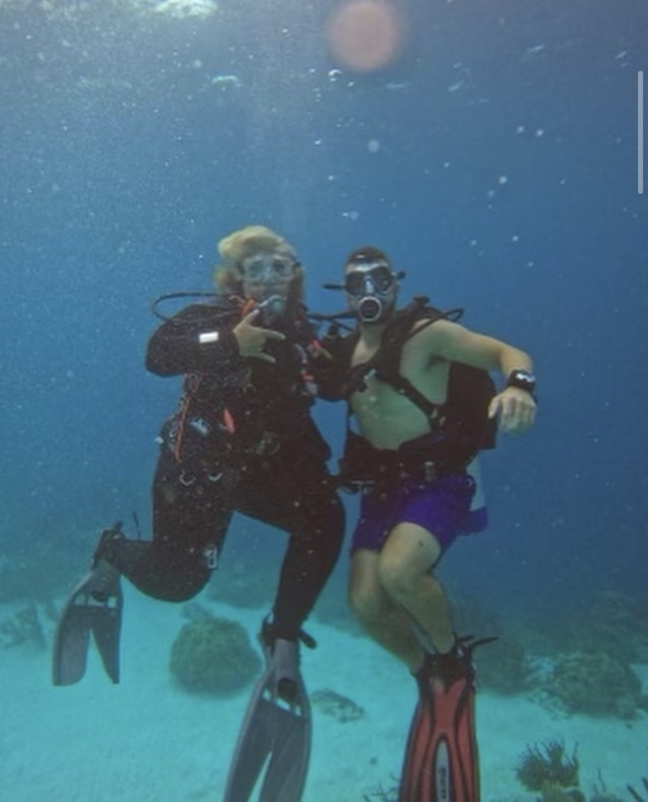
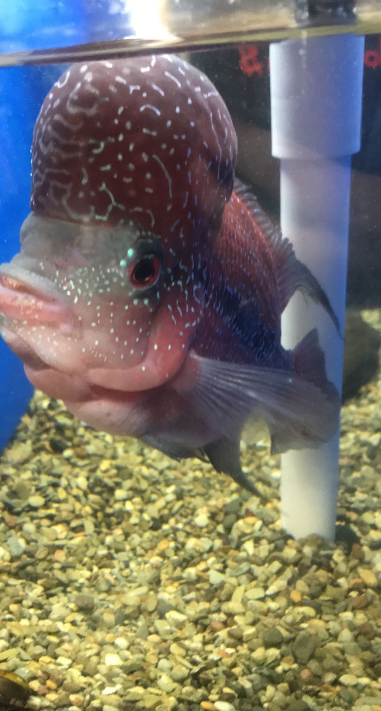
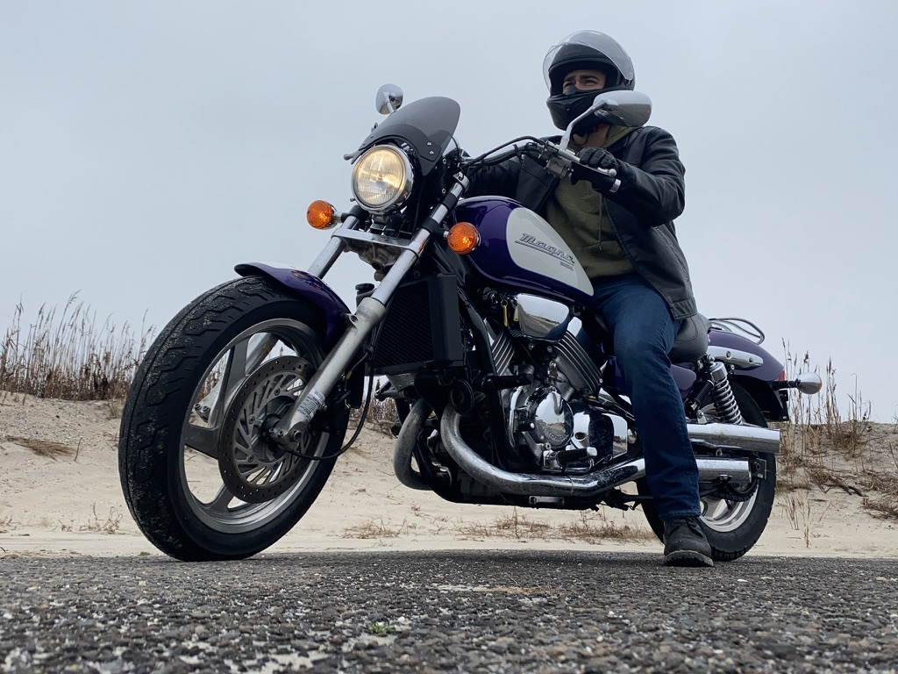

Interests
Scuba Diving
Scuba diving is my beloved hobby, offering amazing experiences underwater. Achieving my advanced certification this January in the British Virgin Islands was unforgettable. Sharing dives with my mom, an avid diver too, has been special. From New York to the Bahamas and Florida, we've explored diverse waters, discovering fascinating marine life and enjoying the ocean's tranquility.
Fishkeeping
Caring for home aquariums has been a passion of mine since before I even started scuba diving. It's a calming and intriguing hobby that lets me observe aquatic life up close. Each aquarium is like a tiny world, full of beauty and complexity, right in my own home.
Motorcycle Riding
As the weather gets warmer I love to ride my motorcycle, giving me the freedom to hit the open road and connect with nature. Whether I'm cruising through scenic landscapes or navigating city streets, each ride is an adventure. Discovering new places and enjoying the thrill of the ride adds excitement to my life.
Fish Quiz
What type of aquarium fish are you? Take the quiz to find out!